Top Masteries
 By
Amir96lx
By
Amir96lx
Contents
- Intro
- Current Champions
- Notable Milestones
-
Category Rankings
- Total Awards
- Total Awards (Excluding Hacks)
- Event Awards
- Site Awards
- Hack Awards
- Homebrew Awards
- Subset Awards
- Amstrad CPC
- Apple II
- Arcade
- Arcadia 2001
- Arduboy
- Atari 2600
- Atari Jaguar CD
- Dreamcast
- Elektor TV Games Computer
- Fairchild Channel F
- Game Boy
- Game Boy Advance
- Game Boy Color
- Game Gear
- GameCube
- Interton VC 4000
- Master System
- Mega Drive
- Mega Duck
- Nintendo 64
- NES
- Nintendo DS
- Nintendo DSi
- PC Engine
- PC Engine CD
- PC-8000/8800
- PlayStation
- PlayStation 2
- PlayStation Portable
- Pokémon Mini
- Sega Saturn
- Sega CD
- SG-1000
- SNES
- Uzebox
- Virtual Boy
- WASM-4
- Watara Supervision
Intro
We are going to take a look at another metric for greatness, Mastery Awards. Mastery awards are given to users when they complete every achievement for a given set in hardcore mode. Users wear mastery awards as a badge of honor on their profile page representing all the hard work they put into truly becoming a master of the game.
Below we will take a look at which users rank among the best with the most mastery awards in several categories well as notable updates from the previous month to each individual category. Check to see how you rank among the rest of the community members.
Special thanks to  Nydaxn for creating the ranking image templates.
Nydaxn for creating the ranking image templates.
* Data as of November 1st 2024.
Current Champions
|
|
|
Mastery Awards | |
|---|---|---|---|
 Total Awards
| Amir96lx | 1297 | |
| Event Awards
|  Hotscrock Hotscrock | 37 | |
| Site Awards
|  ladynadiad ladynadiad | 34 | |
| Hacks
|  HolyShinx HolyShinx | 365 | |
| Homebrews
| Amir96lx | 335 | |
| Subsets
|  GreninjaMan GreninjaMan | 43 | |
 3DO Interactive Multiplayer
|
 HotCoffee HotCoffee | 17 | |
 Amstrad CPC
|  SilentsongEQ SilentsongEQ | 25 | |
 Apple II
|  Sylrifaide Sylrifaide | 48 | |
 Arcade
|  LordBBH LordBBH | 148 | |
 Arcadia 2001
|  Maximdraco Maximdraco | 29 | |
 Arduboy
|  GregHouse007 GregHouse007 | 58 | |
 Atari 2600
|  PMniac PMniac | 126 | |
 Atari 7800
| PMniac | 21 | |
 Atari Jaguar
| PMniac | 12 | |
 Atari Jaguar CD
|  sludgemastic sludgemastic | 9 | |
 Atari Lynx
|  Jungon Jungon | 15 | |
 ColecoVision
| PMniac | 24 | |
 Dreamcast
|  Yordlebreeder Yordlebreeder | 49 | |
 Elektor TV Games Computer
|
Amir96lx Maximdraco sludgemastic
|
25 | |
 Fairchild Channel F
| Maximdraco | 33 | |
 Game Boy
|  Shootzy Shootzy | 165 | |
 Game Boy Advance
|  bonecrusher1022 bonecrusher1022 | 197 | |
 Game Boy Color
|  pitapocket17 pitapocket17 | 169 | |
 Game Gear
| Nydaxn | 100 | |
 GameCube
|  grapeisgreat grapeisgreat | 26 | |
 Intellivision
| Jungon | 28 | |
 Interton VC 4000
|  wizface2137 wizface2137 | 34 | |
 Magnavox Odyssey 2
| Maximdraco | 26 | |
 Master System
| Jungon | 115 | |
 Mega Drive
|  DUT DUT | 195 | |
 Mega Duck
|  AzuchiAkeshi AzuchiAkeshi | 18 | |
 MSX
| Jungon | 16 | |
 Nintendo 64
|  AstroFennec AstroFennec | 66 | |
 Neo Geo CD
| LordBBH | 9 | |
 Neo Geo Pocket
|  MelodyAsh MelodyAsh | 16 | |
 NES
|  mx01 mx01 | 312 | |
 Nintendo DS
|  Olafur Olafur | 158 | |
 Nintendo DSi
|  MiningMario MiningMario | 45 | |
 PC Engine
|  Nanashi Nanashi | 28 | |
PC Engine CD
| Nanashi | 21 | |
 PC-8000/8800
|  Orph Orph | 15 | |
 PC-FX
| Nanashi | 13 | |
 PlayStation
|  FBiDev FBiDev | 139 | |
 PlayStation 2
|  Myanjo Myanjo | 81 | |
 PlayStation Portable
|  vaanxbahn vaanxbahn | 71 | |
 Pokémon Mini
| Sylrifaide | 37 | |
 Sega 32X
| DUT | 8 | |
 Sega Saturn
|  lizstar lizstar | 24 | |
 Sega CD
|  Drakub Drakub | 20 | |
 SG-1000
| Jungon | 62 | |
 SNES
|  danibodom danibodom | 272 | |
 Uzebox
| GregHouse007 | 35 | |
 Vectrex
| Jungon | 17 | |
 Virtual Boy
|
Jungon Grahamtams Grahamtams
| 18 | |
 WASM-4
| Amir96lx | 56 | |
 Watara Supervision
|  Sarconius Sarconius | 52 | |
 WonderSwan
| Nanashi | 11 |
Notable Milestones
800 Mastery Awards
| MiningMario |
700 Mastery Awards
| sludgemastic |
 Xymjak Xymjak |
500 Mastery Awards
 HippopotamusRex HippopotamusRex |
Sylrifaide |
 tmap tmap |
400 Mastery Awards
 4lexGrey 4lexGrey |
 cochese788 cochese788 |
 Crystalline343 Crystalline343 |
 grotesque grotesque |
 Hexcreed Hexcreed |
 IzaNamiZX IzaNamiZX |
300 Mastery Awards
| AzuchiAkeshi |
 TneraOgeid TneraOgeid |
wizface2137 |
200 Mastery Awards
 Excessiveiser Excessiveiser |
FBiDev |
 valeforge valeforge |
100 Mastery Awards
 AsonUnique
AsonUnique CarloAndrea97
CarloAndrea97 Empovyle
Empovyle Femtopi
Femtopi Feragruv
Feragruv fluffytoycoy
fluffytoycoy GamerYiqi
GamerYiqi GarlicPong64
GarlicPong64 Goodbite
Goodbite guidios
guidios jroe206535
jroe206535 Kaffeit
Kaffeit Made1nAbyss
Made1nAbyss Nezperdian
Nezperdian RichterMasters
RichterMasters Sneezeball
Sneezeball TheRomario626
TheRomario626 Vastolorde
Vastolorde Verbena
Verbena wolfpakgaming90
wolfpakgaming90Category Rankings
Total Awards
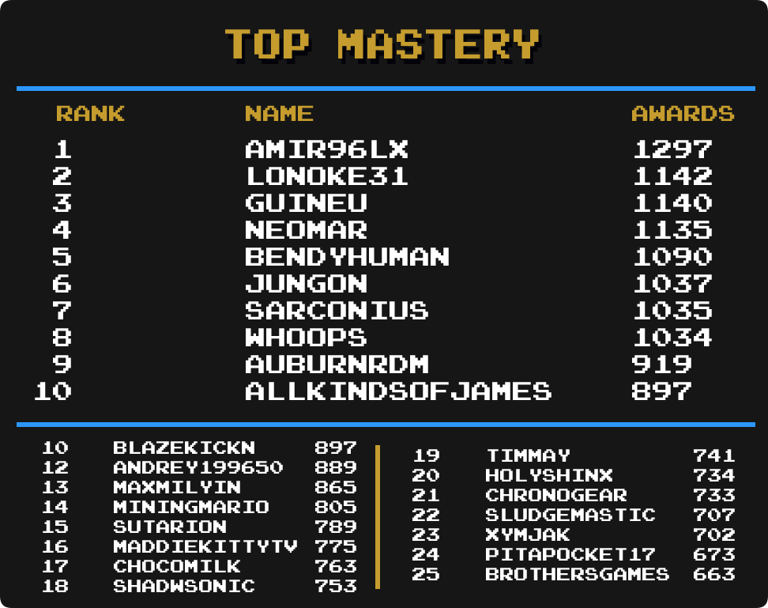
-
Amir96lx remains in 1st with 1297 total mastery awards.
-
 Lonoke31 has moved up 1 spot and is in 2nd place.
Lonoke31 has moved up 1 spot and is in 2nd place. -
Sarconius has moved up 1 spot and is in 7th place.
-
 AllKindsOfJames has moved up 3 spots and is tied for 10th place.
AllKindsOfJames has moved up 3 spots and is tied for 10th place. -
 Sutarion has moved up 1 spot and is in 15th place.
Sutarion has moved up 1 spot and is in 15th place. -
 ChocoMilk has moved up 1 spot and is in 17th place.
ChocoMilk has moved up 1 spot and is in 17th place. -
 Timmay has moved up 2 spots and is in 19th place.
Timmay has moved up 2 spots and is in 19th place. -
sludgemastic has moved up 1 spot and is in 22nd place.
-
pitapocket17 has made it into the top 25 and is in 24th place.
Total Awards (Excluding Hacks)

-
Amir96lx remains in 1st with 1247 total mastery awards.
-
Sarconius has moved up 1 spot and is in 5th place.
-
AllKindsOfJames has moved up 1 spot and is in 10th place.
-
MiningMario has moved up 1 spot and is in 14th place.
-
Sutarion has moved up 1 spot and is in 16th place.
-
Timmay has moved up 2 spots and is in 17th place.
-
pitapocket17 has moved up 1 spot and is in 24th place.
Event Awards
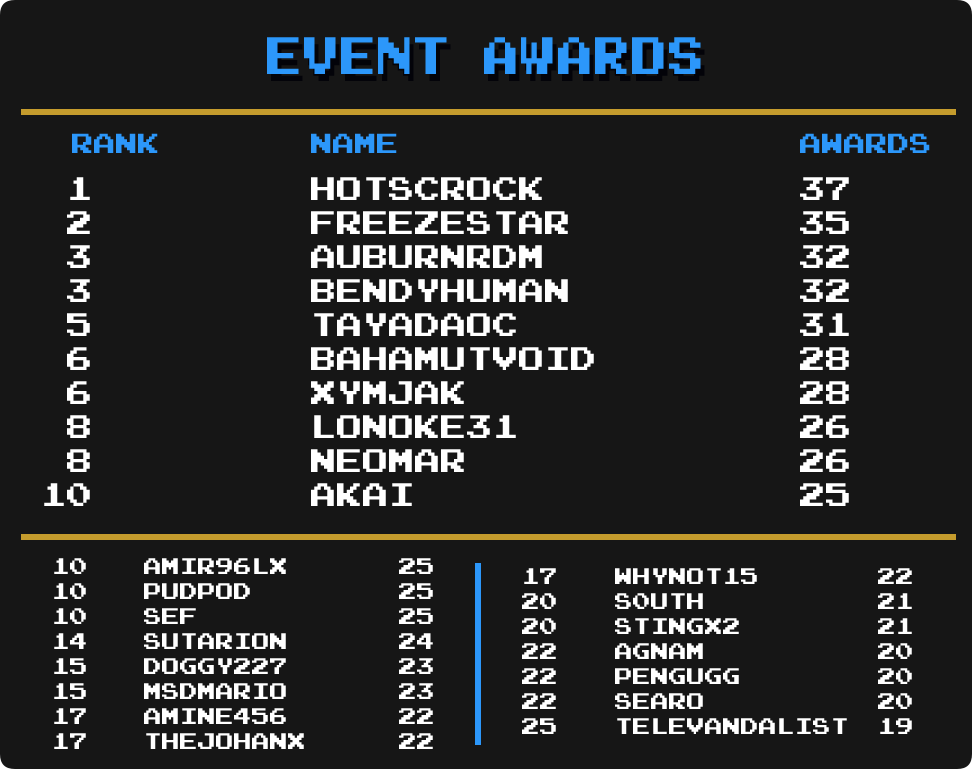
-
Hotscrock remains in 1st with 37 total mastery awards.
-
Lonoke31 has moved up 4 spots and is tied for 8th place.
-
 Pudpod has moved up 1 spot and is in a 4-way tie for 10th place.
Pudpod has moved up 1 spot and is in a 4-way tie for 10th place. -
 Sef has moved up 1 spot and is in a 4-way tie for 10th place.
Sef has moved up 1 spot and is in a 4-way tie for 10th place. -
Sutarion has moved up 1 spot and is in 14th place.
-
 Doggy227 has moved up 1 spot and is tied for 15th place.
Doggy227 has moved up 1 spot and is tied for 15th place. -
 msdmario has moved up 1 spot and is tied for 15th place.
msdmario has moved up 1 spot and is tied for 15th place. -
 amine456 has moved up 1 spot and is in a 3-way tie for 17th place.
amine456 has moved up 1 spot and is in a 3-way tie for 17th place. -
 TheJohanx has moved up 1 spot and is in a 3-way tie for 17th place.
TheJohanx has moved up 1 spot and is in a 3-way tie for 17th place. -
 Whynot15 has moved up 1 spot and is in a 3-way tie for 17th place.
Whynot15 has moved up 1 spot and is in a 3-way tie for 17th place. -
 s0uth has moved up 1 spot and is tied for 20th place.
s0uth has moved up 1 spot and is tied for 20th place. -
 StingX2 has moved up 1 spot and is tied for 20th place.
StingX2 has moved up 1 spot and is tied for 20th place. -
 Agnam has moved up 1 spot and is in a 3-way tie for 22nd place.
Agnam has moved up 1 spot and is in a 3-way tie for 22nd place. -
 PenguGG has moved up 1 spot and is in a 3-way tie for 22nd place.
PenguGG has moved up 1 spot and is in a 3-way tie for 22nd place. -
 Searo has moved up 1 spot and is in a 3-way tie for 22nd place.
Searo has moved up 1 spot and is in a 3-way tie for 22nd place. -
 televandalist has made it into the top 25 and is tied for 25th place.
televandalist has made it into the top 25 and is tied for 25th place.
Site Awards
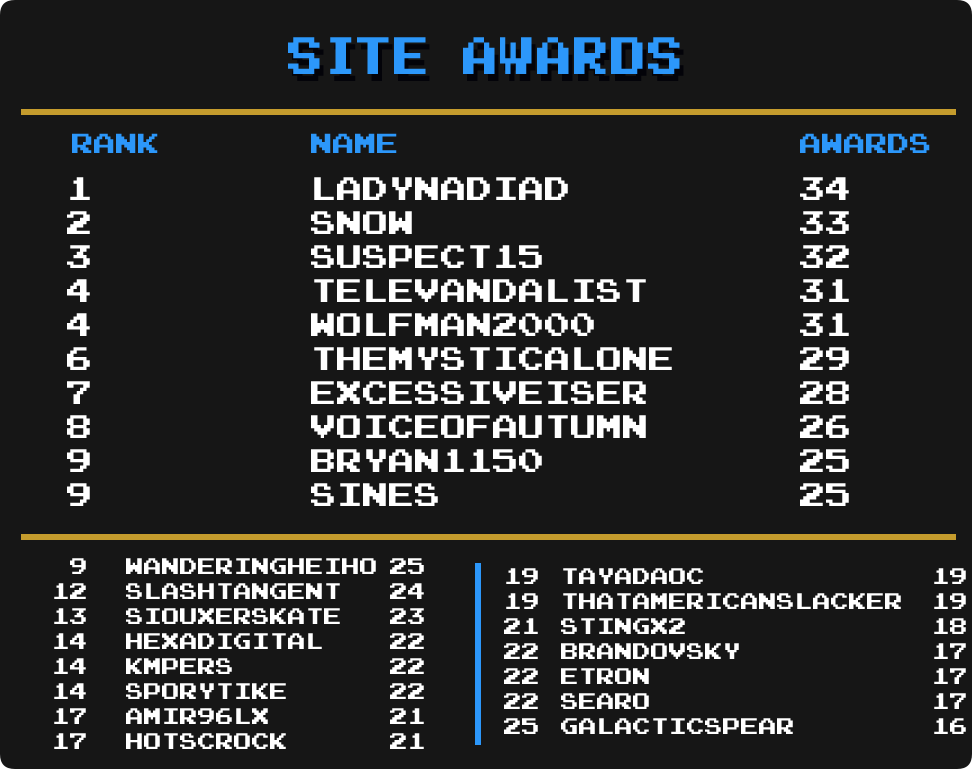
-
ladynadiad remains in 1st with 34 total mastery awards.
-
 Bryan1150 has moved up 1 spot and is in a 3-way tie for 9th place.
Bryan1150 has moved up 1 spot and is in a 3-way tie for 9th place. -
 Sines has moved up 1 spot and is in a 3-way tie for 9th place.
Sines has moved up 1 spot and is in a 3-way tie for 9th place. -
 siouxerskate has moved up 2 spots and is in 13th place.
siouxerskate has moved up 2 spots and is in 13th place.
Hack Awards
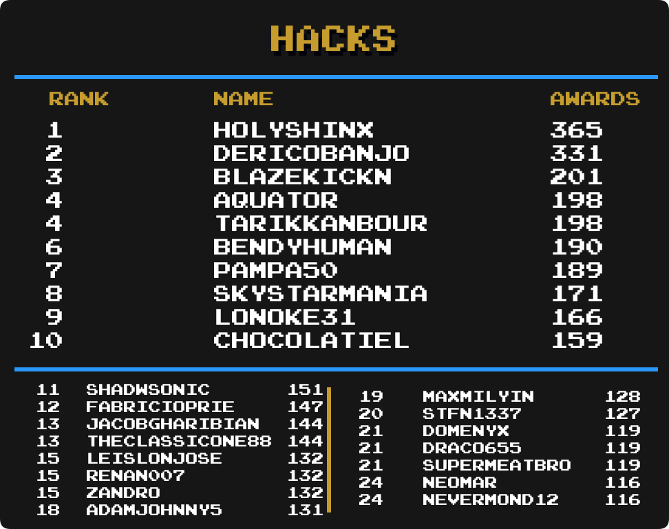
-
HolyShinx remains in 1st with 365 total mastery awards.
-
 Blazekickn has moved up 1 spot and is in 3rd place.
Blazekickn has moved up 1 spot and is in 3rd place. -
 Aquator has moved up 1 spot and is tied for 4th place.
Aquator has moved up 1 spot and is tied for 4th place. -
 Jacobgharibian has moved up 1 spot and is tied for 13th place.
Jacobgharibian has moved up 1 spot and is tied for 13th place. -
 Renan007 has moved up 2 spots and is in a 3-way tie for 15th place.
Renan007 has moved up 2 spots and is in a 3-way tie for 15th place. -
 domenyX has made it into the top 25 and is in a 3-way tie for 21st place.
domenyX has made it into the top 25 and is in a 3-way tie for 21st place.
Homebrew Awards
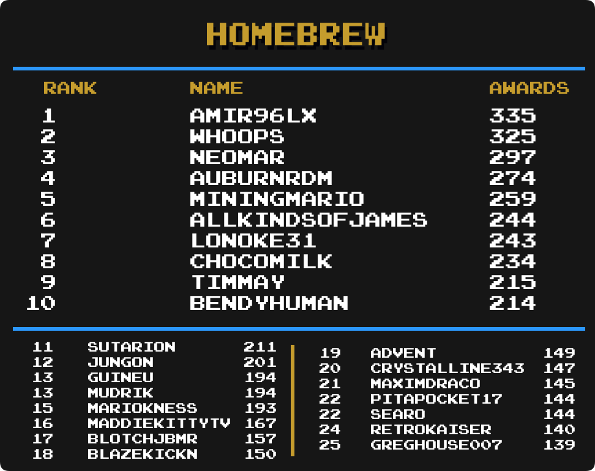
-
Amir96lx remains in 1st with 335 total mastery awards.
-
Timmay has moved up 1 spot and is in 9th place.
-
Jungon has moved up 1 spot and is in 12th place.
-
 mudrik has moved up 1 spot and is tied for 13th place.
mudrik has moved up 1 spot and is tied for 13th place. -
Blazekickn has moved up 1 spot and is in 18th place.
-
pitapocket17 has moved up 1 spot and is tied for 22nd place.
Subset Awards
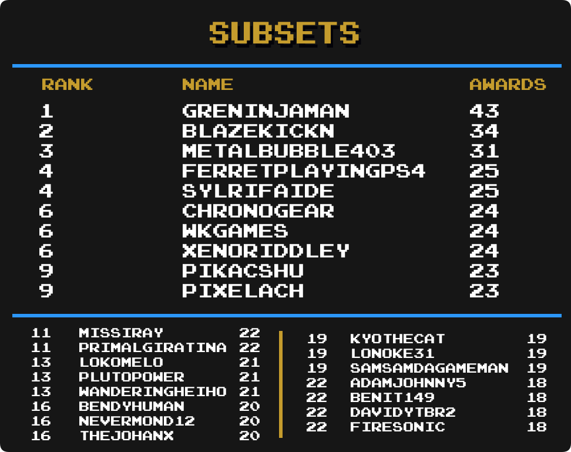
-
GreninjaMan remains in 1st with 43 total mastery awards.
-
Sylrifaide has moved up 3 spots and is tied for 4th place.
-
 ChronoGear has moved up 3 spots and is in a 3-way tie for 6th place.
ChronoGear has moved up 3 spots and is in a 3-way tie for 6th place. -
 Pikacshu has moved up 2 spots and is tied for 9th place.
Pikacshu has moved up 2 spots and is tied for 9th place. -
 PrimalGiratina has moved up 1 spot and is tied for 11th place.
PrimalGiratina has moved up 1 spot and is tied for 11th place. -
 plutopower has moved up 1 spot and is in a 3-way tie for 13th place.
plutopower has moved up 1 spot and is in a 3-way tie for 13th place. -
 Bendyhuman has moved up 1 spot and is in a 3-way tie for 16th place.
Bendyhuman has moved up 1 spot and is in a 3-way tie for 16th place. -
 Nevermond12 has moved up 3 spots and is in a 3-way tie for 16th place.
Nevermond12 has moved up 3 spots and is in a 3-way tie for 16th place. -
 SamsamDaGameMan has made it into the top 25 and is in a 3-way tie for 19th place.
SamsamDaGameMan has made it into the top 25 and is in a 3-way tie for 19th place.
Amstrad CPC
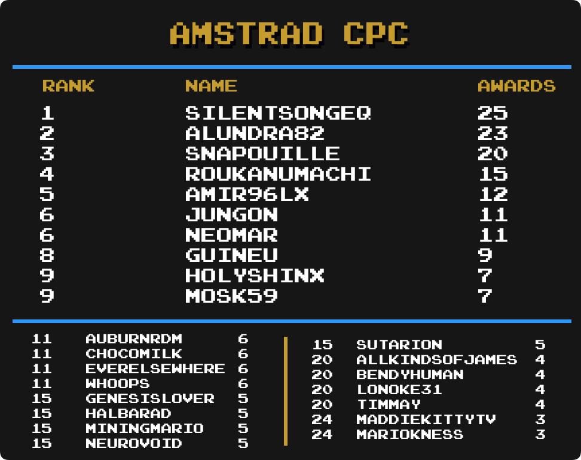
-
SilentsongEQ remains in 1st with 25 total mastery awards.
-
Sutarion has moved up 2 spots and is in a 5-way tie for 15th place.
-
Timmay has made it into the top 25 and is in a 4-way tie for 20th place.
Apple II
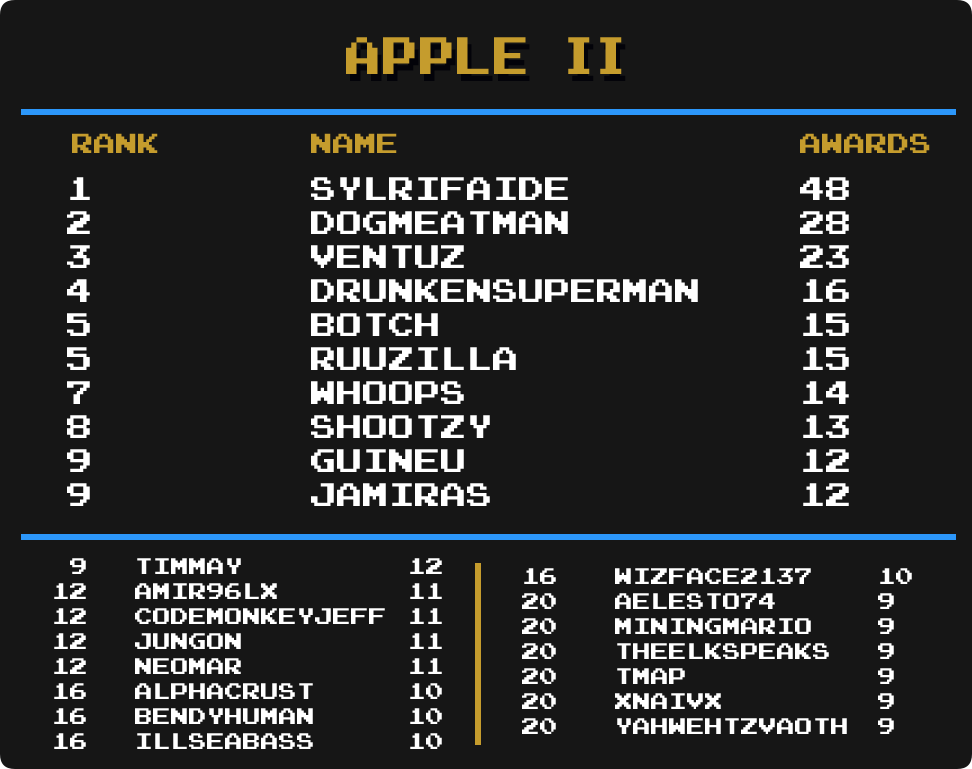
-
Sylrifaide remains in 1st with 48 total mastery awards.
-
Timmay has moved up 4 spots and is in a 3-way tie for 9th place.
-
wizface2137 has made it into the top 25 and is in a 4-way tie for 16th place.
-
MiningMario has made it into the top 25 and is in a 6-way tie for 20th place.
Arcade
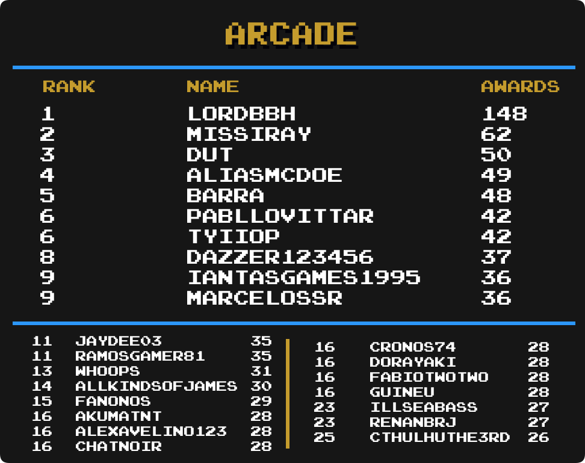
-
LordBBH remains in 1st with 148 total mastery awards.
-
 Dazzer123456 has moved up 2 spots and is in 8th place.
Dazzer123456 has moved up 2 spots and is in 8th place. -
 IantasGames1995 has moved up 3 spots and is tied for 9th place.
IantasGames1995 has moved up 3 spots and is tied for 9th place. -
AllKindsOfJames has moved up 11 spot and is in 14th place.
-
 dorayaki has moved up 3 spots and is in a 7-way tie for 16th place.
dorayaki has moved up 3 spots and is in a 7-way tie for 16th place. -
 fabiotwotwo has moved up 1 spot and is in a 7-way tie for 16th place.
fabiotwotwo has moved up 1 spot and is in a 7-way tie for 16th place. -
 ILLSeaBass has made it into the top 25 and is tied for 23rd place.
ILLSeaBass has made it into the top 25 and is tied for 23rd place.
Arcadia 2001
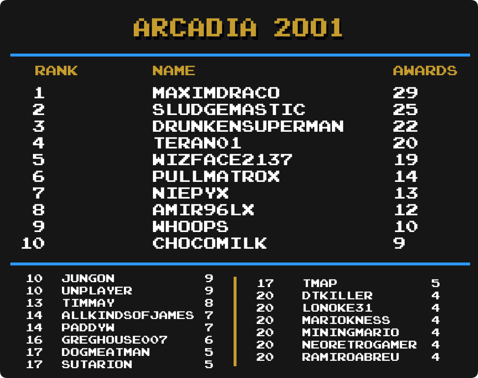
-
Maximdraco remains in 1st with 29 total mastery awards.
-
 Niepyx has made it into the top 25 and is in 7th place.
Niepyx has made it into the top 25 and is in 7th place. -
MiningMario has made it into the top 25 and is in a 8-way tie for 20th place.
Arduboy

-
GregHouse007 remains in 1st with 58 total mastery awards.
-
 LeakyComet has moved up 1 spot and is tied for 2nd place.
LeakyComet has moved up 1 spot and is tied for 2nd place. -
Lonoke31 has moved up 1 spot and is in 10th place.
-
AllKindsOfJames has moved up 2 spots and is in a 3-way tie for 11th place.
-
Timmay has moved up 2 spots and is in 14th place.
-
Sutarion has moved up 2 spots and is tied for 17th place.
-
vaanxbahn has made it into the top 25 and is tied for 17th place.
Atari 2600
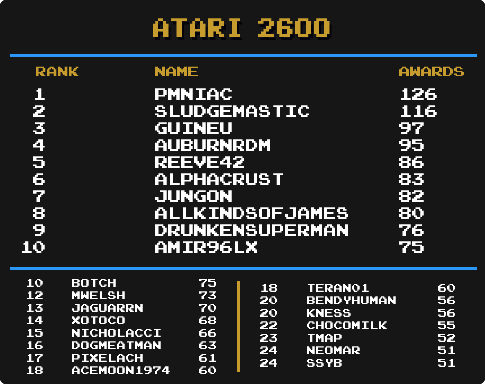
-
PMniac remains in 1st with 126 total mastery awards.
-
 jaguarrn has moved up 2 spots and is in 13th place.
jaguarrn has moved up 2 spots and is in 13th place. -
 AceMoon1974 has moved up 4 spots and is tied for 18th place.
AceMoon1974 has moved up 4 spots and is tied for 18th place. -
 Ssyb has made it into the top 25 and is tied for 24th place.
Ssyb has made it into the top 25 and is tied for 24th place.
Atari Jaguar CD
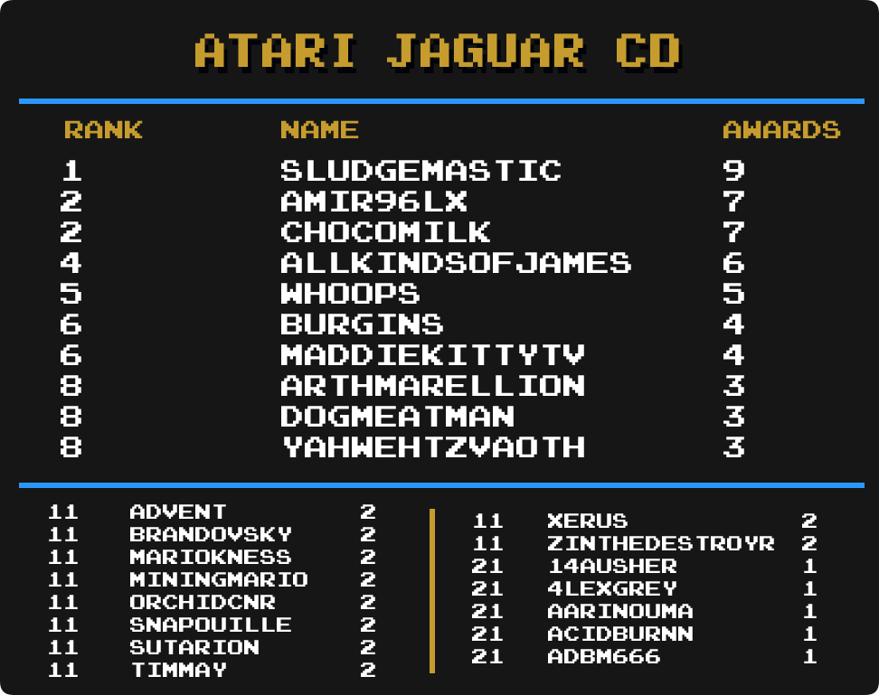
-
sludgemastic remains in 1st with 9 total mastery awards.
-
 arthmarellion has moved up 3 spots and is in a 3-way tie for 8th place.
arthmarellion has moved up 3 spots and is in a 3-way tie for 8th place.
Dreamcast
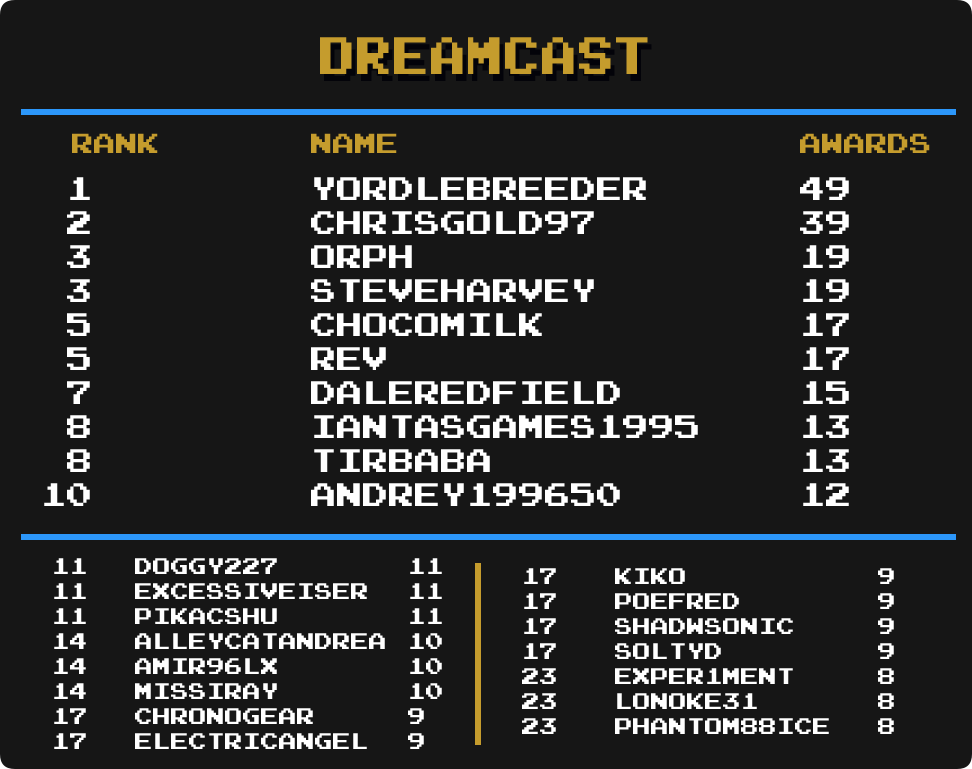
-
Yordlebreeder remains in 1st with 49 total mastery awards.
-
 exper1ment has made it into the top 25 and is in a 9-way tie for 23rd place.
exper1ment has made it into the top 25 and is in a 9-way tie for 23rd place.
Elektor TV Games Computer
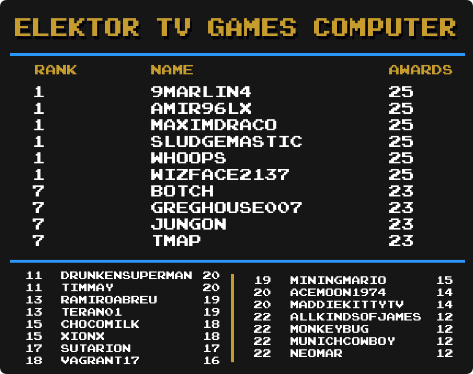
-
 9marlin4 has taken 1st place with 25 total mastery awards.
9marlin4 has taken 1st place with 25 total mastery awards. -
Jungon has moved up 3 spots and is in a 4-way tie for 7th place.
-
MiningMario has moved up 2 spots and is in 19th place.
Fairchild Channel F

-
Maximdraco remains in 1st with 33 total mastery awards.
-
 JeanBlasay has moved up 4 spots and is in 2nd place.
JeanBlasay has moved up 4 spots and is in 2nd place. -
 Slackot has made it into the top 25 and is in a 5-way tie for 5th place.
Slackot has made it into the top 25 and is in a 5-way tie for 5th place. -
Timmay has moved up 1 spot and is in a 3-way tie for 20th place.
-
 evanation has made it into the top 25 and is tied for 25th place.
evanation has made it into the top 25 and is tied for 25th place.
Game Boy
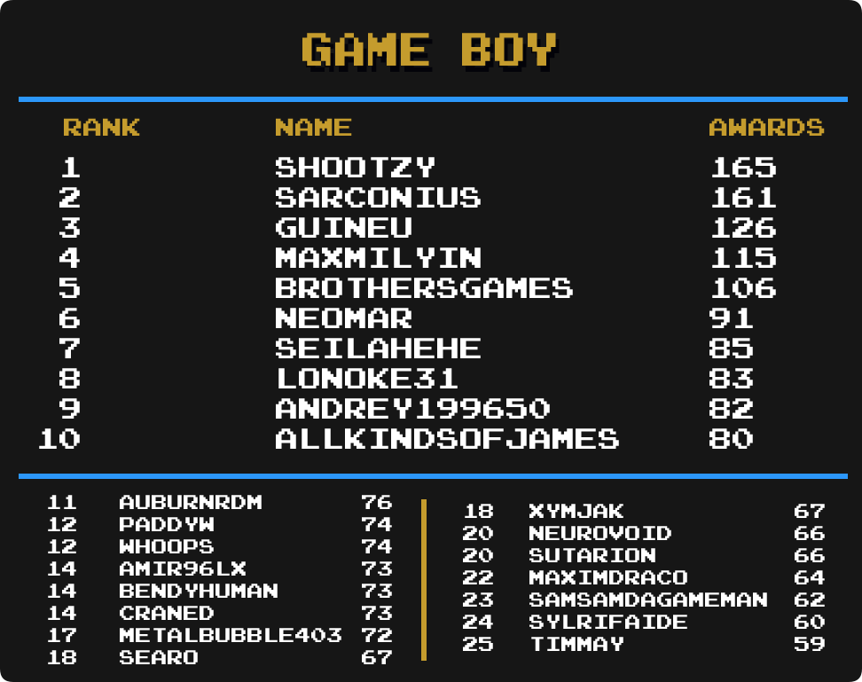
-
Shootzy remains in 1st with 165 total mastery awards.
-
Lonoke31 has moved up 1 spot and is in 8th place.
-
 PaddyW has moved up 5 spots and is tied for 12th place.
PaddyW has moved up 5 spots and is tied for 12th place. -
 Whoops has moved up 2 spots and is tied for 12th place.
Whoops has moved up 2 spots and is tied for 12th place. -
Amir96lx has moved up 2 spots and is in a 3-way tie for 14th place.
-
Sutarion has moved up 1 spot and is tied for 20th place.
-
Timmay has made it into the top 25 and is in 25th place.
Game Boy Advance
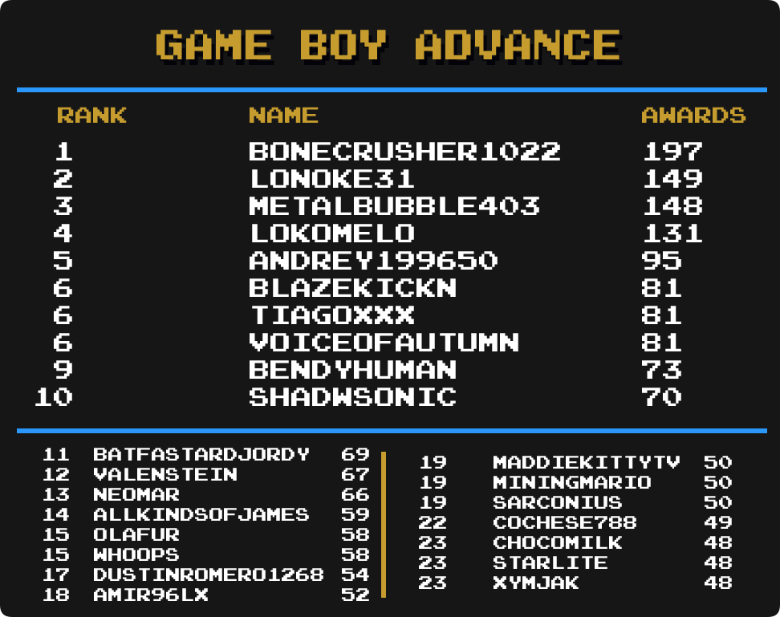
-
bonecrusher1022 remains in 1st with 197 total mastery awards.
-
Blazekickn has moved up 2 spots and is in a 3-way tie for 6th place.
-
 ShadwSonic has moved up 1 spot and is in 10th place.
ShadwSonic has moved up 1 spot and is in 10th place. -
Olafur has moved up 1 spot and is tied for 15th place.
-
 MaddieKittyTV has moved up 2 spots and is in a 3-way tie for 19th place.
MaddieKittyTV has moved up 2 spots and is in a 3-way tie for 19th place. -
MiningMario has moved up 2 spots and is in a 3-way tie for 19th place.
Game Boy Color
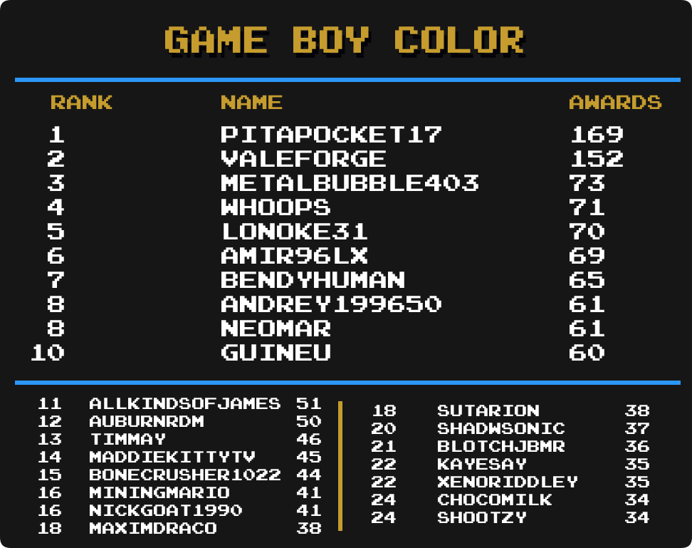
-
pitapocket17 remains in 1st with 169 total mastery awards.
-
Whoops has moved up 1 spot and is in 4th place.
-
 NEOMAR has moved up 1 spot and is tied for 8th place.
NEOMAR has moved up 1 spot and is tied for 8th place. -
Timmay has moved up 1 spot and is in 13th place.
-
MiningMario has moved up 4 spots and is tied for 16th place.
-
 BlotchJBMR has made it into the top 25 and is in 21st place.
BlotchJBMR has made it into the top 25 and is in 21st place.
Game Gear
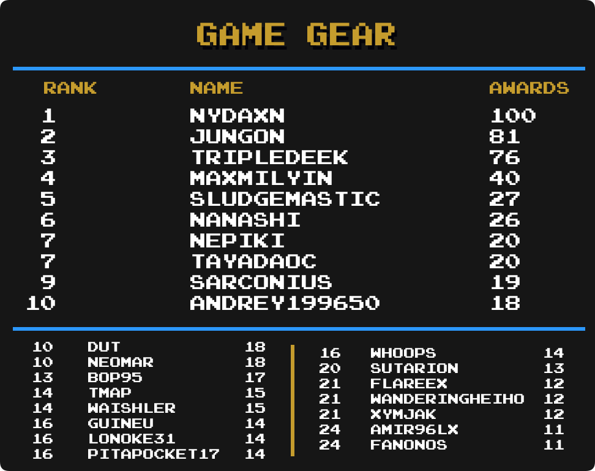
-
Nydaxn remains in 1st with 100 total mastery awards.
-
DUT has moved up 1 spot and is in a 3-way tie for 10th place.
-
tmap has moved up 6 spots and is tied for 14th place.
GameCube
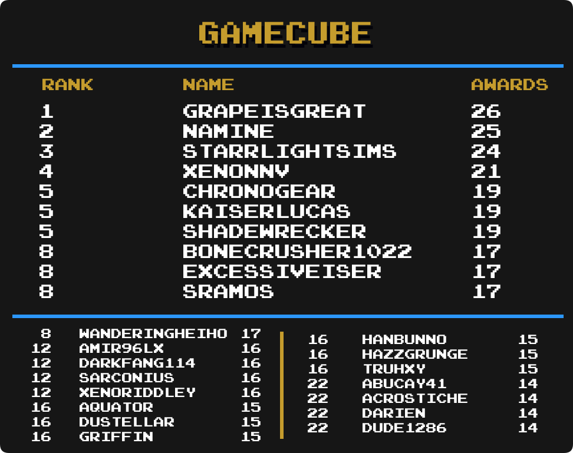
-
grapeisgreat remains in 1st with 26 total mastery awards.
-
 Namine has moved up 1 spot and is in 2nd place.
Namine has moved up 1 spot and is in 2nd place. -
 StarrlightSims has moved up 1 spot and is in 3rd place.
StarrlightSims has moved up 1 spot and is in 3rd place. -
 XenonNV has made it into the top 25 and is in 4th place.
XenonNV has made it into the top 25 and is in 4th place. -
 Shadewrecker has made it into the top 25 and is in a 3-way tie for 5th place.
Shadewrecker has made it into the top 25 and is in a 3-way tie for 5th place. -
bonecrusher1022 has moved up 2 spots and is in a 4-way tie for 8th place.
-
 SRamos has moved up 12 spots and is in a 4-way tie for 8th place.
SRamos has moved up 12 spots and is in a 4-way tie for 8th place. -
 xenoriddley has moved up 3 spots and is in a 4-way tie for 12th place.
xenoriddley has moved up 3 spots and is in a 4-way tie for 12th place. -
Aquator has moved up 3 spots and is in a 6-way tie for 16th place.
-
 Griffin has made it into the top 25 and is in a 6-way tie for 16th place.
Griffin has made it into the top 25 and is in a 6-way tie for 16th place. -
 Abucay41 has made it into the top 25 and is in a 9-way tie for 22nd place.
Abucay41 has made it into the top 25 and is in a 9-way tie for 22nd place. -
 Darien has made it into the top 25 and is in a 9-way tie for 22nd place.
Darien has made it into the top 25 and is in a 9-way tie for 22nd place. -
 dude1286 has made it into the top 25 and is in a 9-way tie for 22nd place.
dude1286 has made it into the top 25 and is in a 9-way tie for 22nd place.
Interton VC 4000
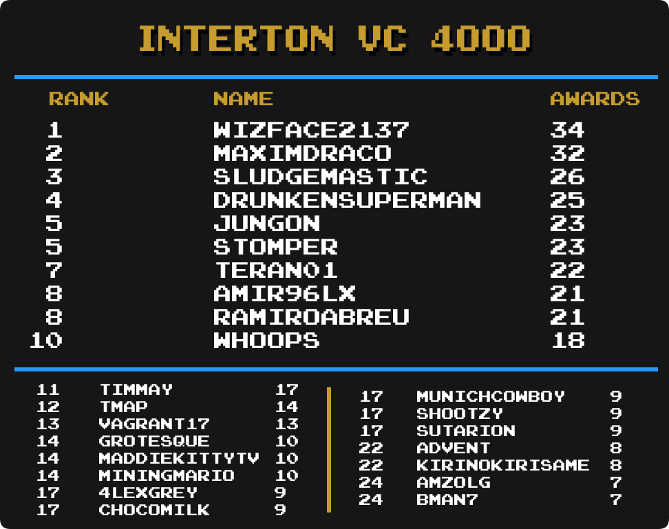
-
wizface2137 remains in 1st with 34 total mastery awards.
-
4lexGrey has moved up 6 spots and is in a 5-way tie for 17th place.
-
Sutarion has moved up 1 spot and is in a 5-way tie for 17th place.
Master System
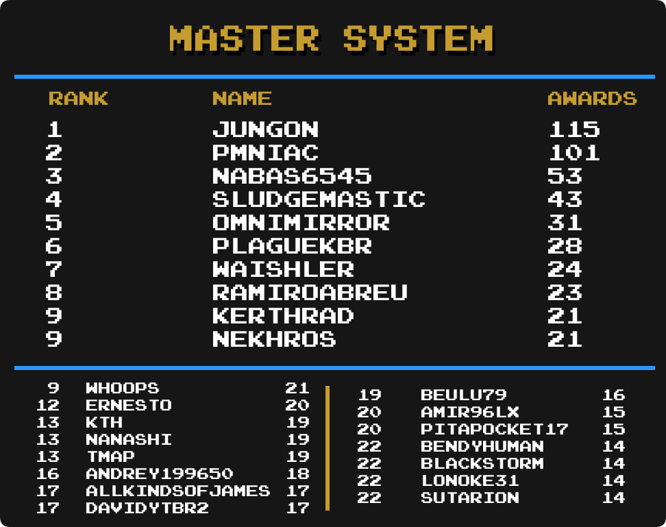
-
Jungon remains in 1st with 115 total mastery awards.
-
 OmniMirror has moved up 1 spot and is in 5th place.
OmniMirror has moved up 1 spot and is in 5th place. -
 Waishler has moved up 1 spot and is in 7th place.
Waishler has moved up 1 spot and is in 7th place. -
 Andrey199650 has moved up 4 spots and is in 16th place.
Andrey199650 has moved up 4 spots and is in 16th place. -
Sutarion has made it into the top 25 and is in a 4-way tie for 22nd place.
Mega Drive
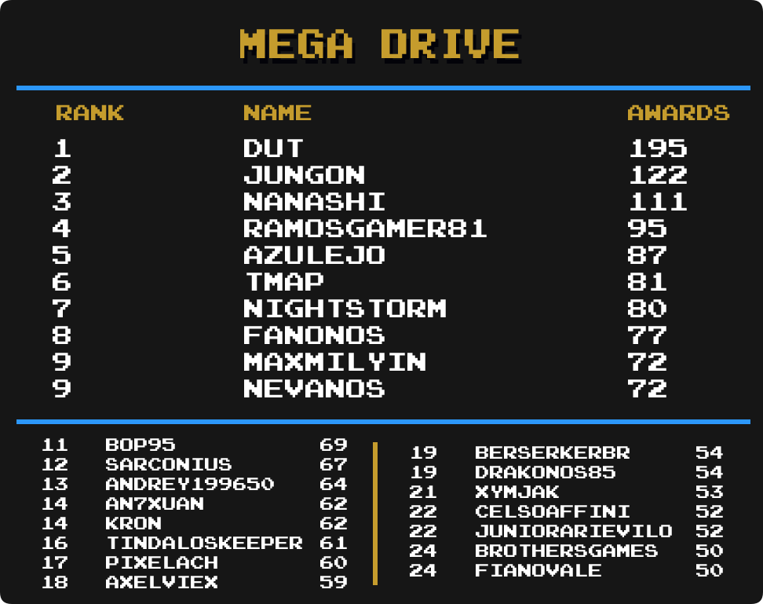
Mega Duck
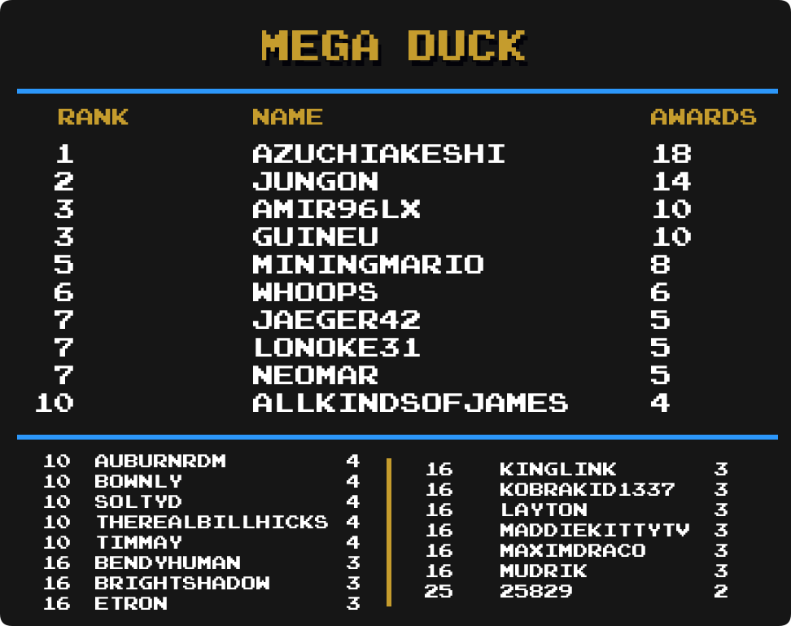
-
AzuchiAkeshi has taken 1st place with 18 total mastery awards.
-
NEOMAR has moved up 3 spots and is in a 3-way tie for 7th place.
-
mudrik has made it into the top 25 and is in a 9-way tie for 16th place.
Nintendo 64
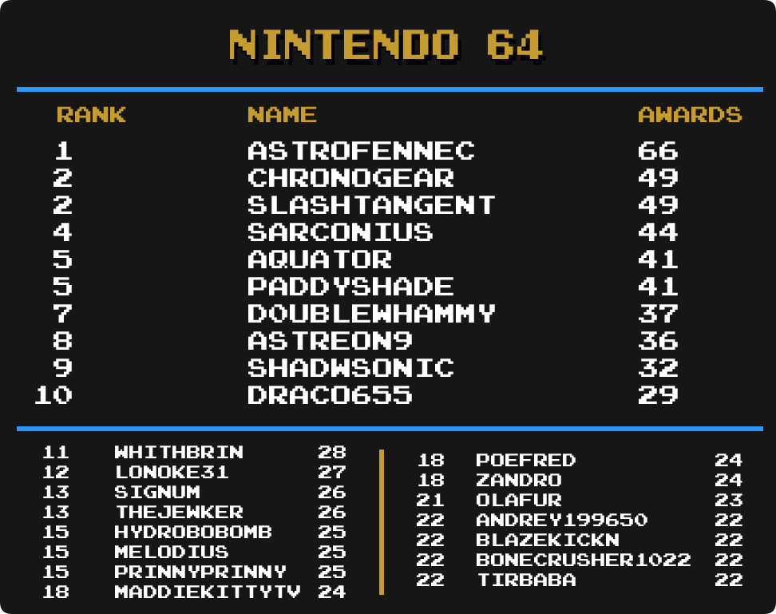
-
AstroFennec remains in 1st with 66 total mastery awards.
-
bonecrusher1022 has moved up 1 spot and is in a 5-way tie for 22nd place.
-
 Tirbaba has made it into the top 25 and is in a 5-way tie for 22nd place.
Tirbaba has made it into the top 25 and is in a 5-way tie for 22nd place.
NES
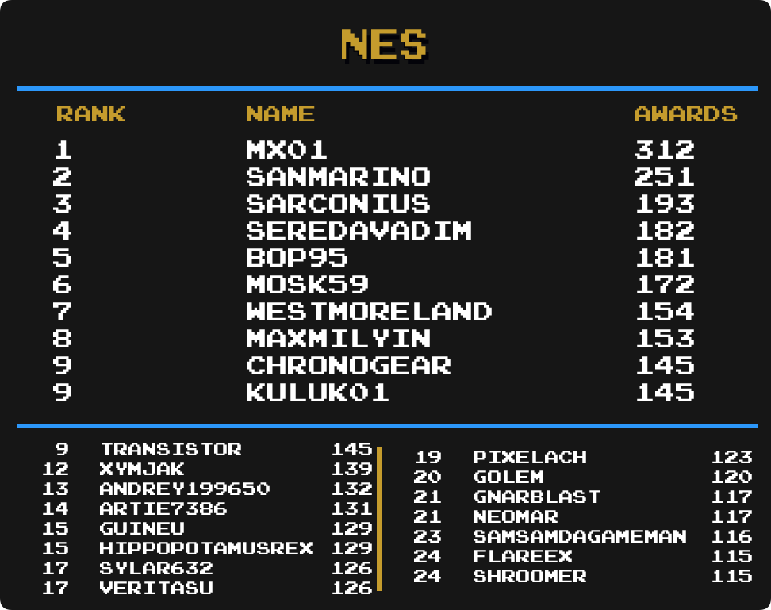
-
mx01 remains in 1st with 312 total mastery awards.
-
 gnarblast has moved up 2 spots and is tied for 21st place.
gnarblast has moved up 2 spots and is tied for 21st place. -
SamsamDaGameMan has moved up 2 spots and is in 23rd place.
Nintendo DS
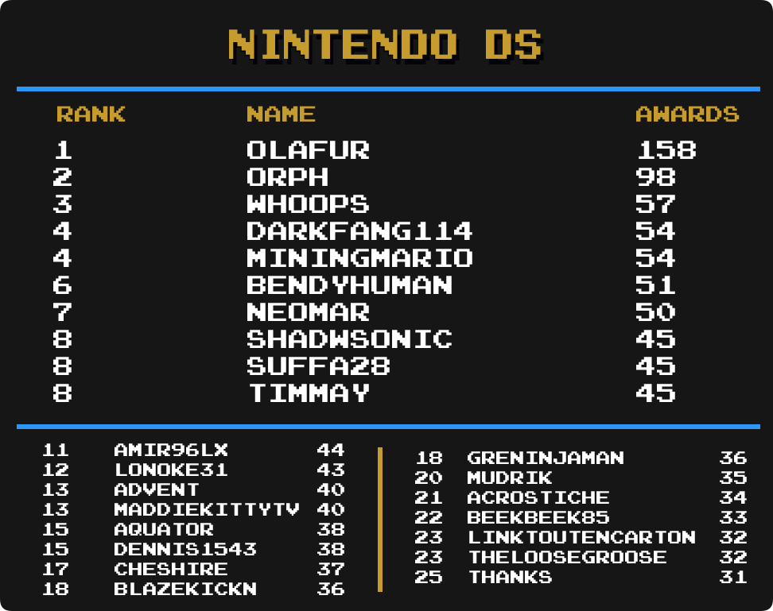
-
Olafur remains in 1st with 158 total mastery awards.
-
Lonoke31 has moved up 1 spot and is in 12th place.
Nintendo DSi
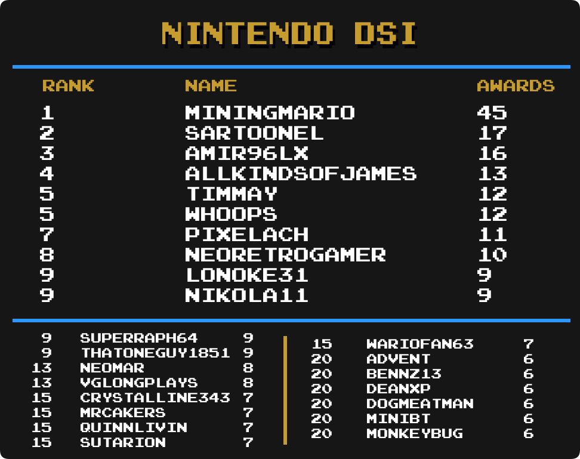
-
MiningMario remains in 1st with 45 total mastery awards.
-
 NeoRetroGamer has moved up 7 spots and is in 8th place.
NeoRetroGamer has moved up 7 spots and is in 8th place. -
Crystalline343 has made it into the top 25 and is in a 5-way tie for 15th place.
-
Sutarion has moved up 6 spots and is in a 5-way tie for 15th place.
-
 minibt has made it into the top 25 and is in a 8-way tie for 20th place.
minibt has made it into the top 25 and is in a 8-way tie for 20th place.
PC Engine
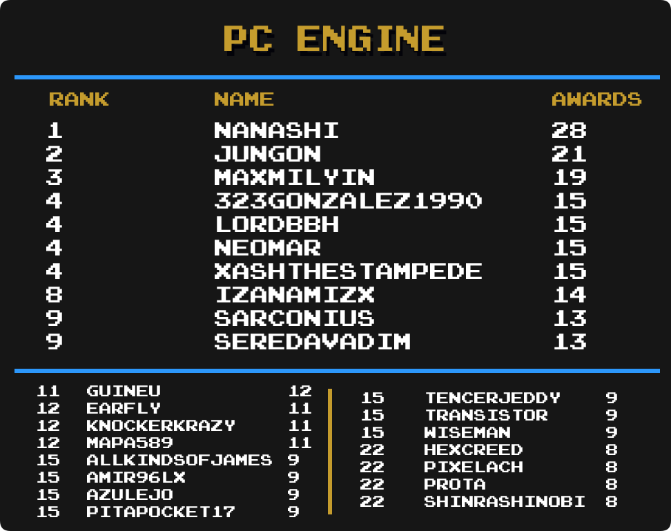
-
Nanashi remains in 1st with 28 total mastery awards.
-
AllKindsOfJames has moved up 4 spots and is in a 7-way tie for 15th place.
-
pitapocket17 has moved up 3 spots and is in a 7-way tie for 15th place.
-
 Wiseman has made it into the top 25 and is in a 7-way tie for 15th place.
Wiseman has made it into the top 25 and is in a 7-way tie for 15th place.
PC Engine CD
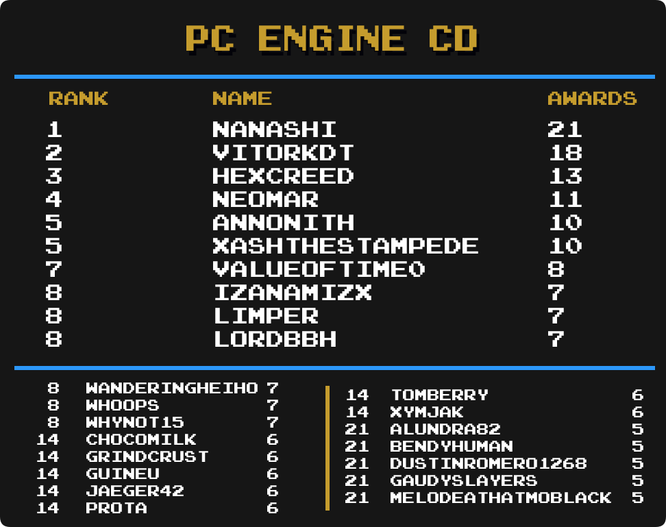
-
Nanashi remains in 1st with 21 total mastery awards.
-
 WanderingHeiho has moved up 7 spots and is in a 6-way tie for 8th place.
WanderingHeiho has moved up 7 spots and is in a 6-way tie for 8th place. -
 Grindcrust has made it into the top 25 and is in a 7-way tie for 14th place.
Grindcrust has made it into the top 25 and is in a 7-way tie for 14th place. -
 DustinRomero1268 has made it into the top 25 and is in a 12-way tie for 21st place.
DustinRomero1268 has made it into the top 25 and is in a 12-way tie for 21st place.
PC-8000/8800
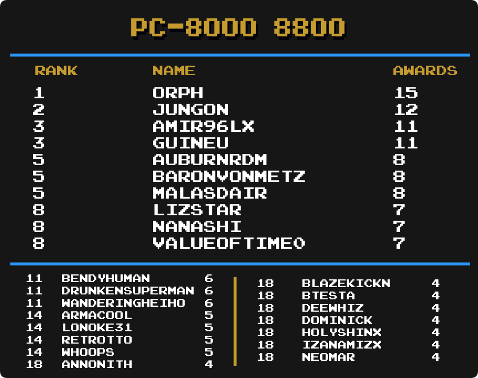
-
Orph remains in 1st with 15 total mastery awards.
PlayStation
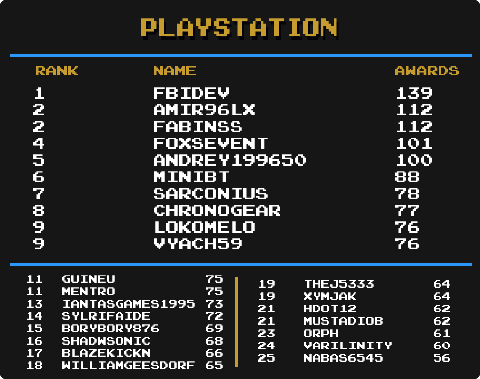
-
FBiDev remains in 1st with 139 total mastery awards.
-
Amir96lx has moved up 1 spot and is tied for 2nd place.
-
 foxsevent has moved up 1 spot and is in 4th place.
foxsevent has moved up 1 spot and is in 4th place. -
Sarconius has moved up 1 spot and is in 7th place.
-
 Lokomelo has moved up 1 spot and is tied for 9th place.
Lokomelo has moved up 1 spot and is tied for 9th place. -
 Vyach59 has moved up 1 spot and is tied for 9th place.
Vyach59 has moved up 1 spot and is tied for 9th place.
PlayStation 2
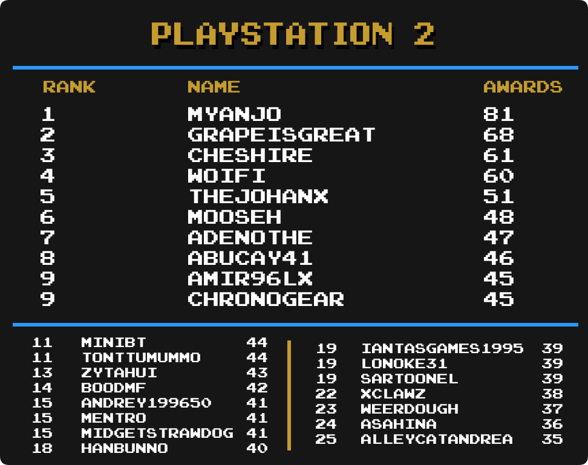
-
Myanjo remains in 1st with 81 total mastery awards.
-
 Adenothe has moved up 1 spot and is in 7th place.
Adenothe has moved up 1 spot and is in 7th place. -
Amir96lx has moved up 4 spots and is tied for 9th place.
-
 Tonttumummo has moved up 3 spots and is tied for 11th place.
Tonttumummo has moved up 3 spots and is tied for 11th place. -
 Mentro has moved up 3 spots and is in a 3-way tie for 15th place.
Mentro has moved up 3 spots and is in a 3-way tie for 15th place. -
 midgetstrawdog has moved up 3 spots and is in a 3-way tie for 15th place.
midgetstrawdog has moved up 3 spots and is in a 3-way tie for 15th place. -
 AlleycatAndrea has made it into the top 25 and is in a 3-way tie for 25th place.
AlleycatAndrea has made it into the top 25 and is in a 3-way tie for 25th place.
PlayStation Portable
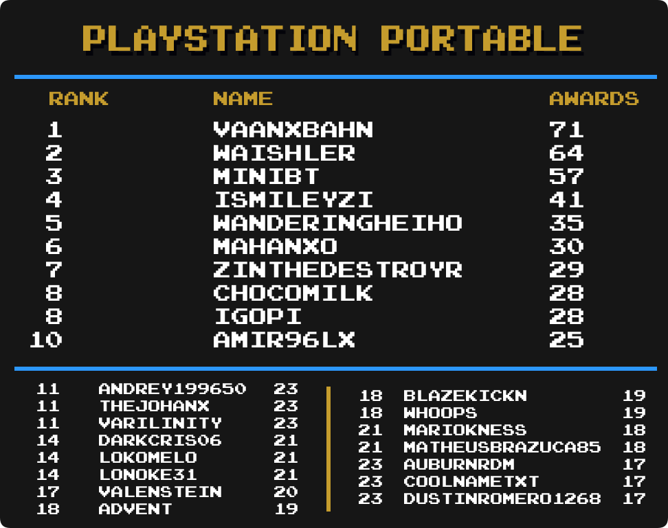
-
vaanxbahn remains in 1st with 71 total mastery awards.
-
 ZintheDestroyr has moved up 1 spot and is in 7th place.
ZintheDestroyr has moved up 1 spot and is in 7th place. -
 igopi has moved up 1 spot and is tied for 8th place.
igopi has moved up 1 spot and is tied for 8th place. -
Lokomelo has moved up 3 spots and is in a 3-way tie for 14th place.
-
 Valenstein has moved up 5 spots and is in 17th place.
Valenstein has moved up 5 spots and is in 17th place. -
DustinRomero1268 has made it into the top 25 and is in a 3-way tie for 23rd place.
Pokémon Mini
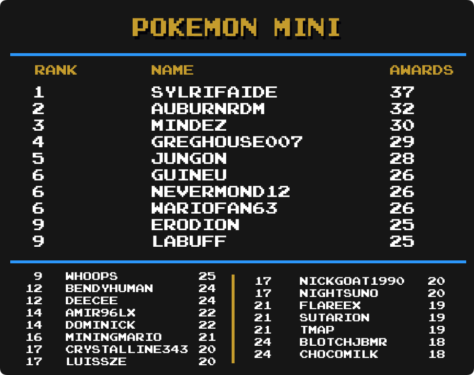
-
Sylrifaide remains in 1st with 37 total mastery awards.
-
 Mindez has moved up 2 spots and is in 3rd place.
Mindez has moved up 2 spots and is in 3rd place. -
Whoops has moved up 1 spot and is in a 3-way tie for 9th place.
-
MiningMario has moved up 2 spots and is in 16th place.
-
ChocoMilk has made it into the top 25 and is in a 6-way tie for 24th place.
Sega Saturn
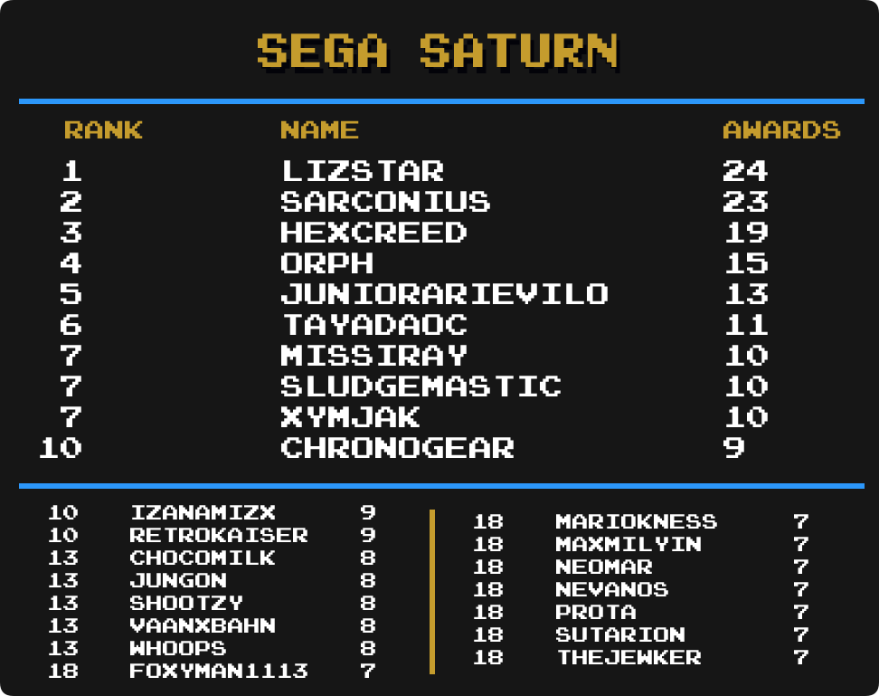
-
lizstar has taken 1st place with 24 total mastery awards.
-
Xymjak has moved up 3 spots and is in a 3-way tie for 7th place.
Sega CD
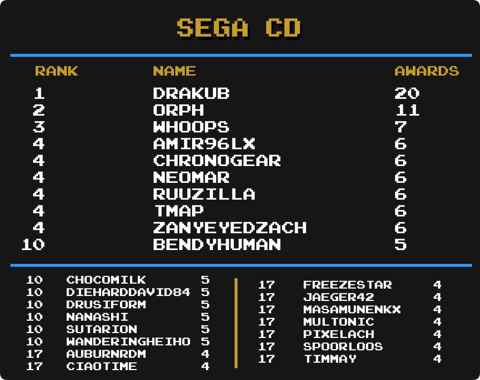
-
Drakub remains in 1st with 20 total mastery awards.
-
NEOMAR has moved up 8 spots and is in a 6-way tie for 4th place.
-
Sutarion has moved up 8 spots and is in a 7-way tie for 10th place.
-
 multonic has made it into the top 25 and is in a 12-way tie for 17th place.
multonic has made it into the top 25 and is in a 12-way tie for 17th place. -
Timmay has made it into the top 25 and is in a 12-way tie for 17th place.
SG-1000
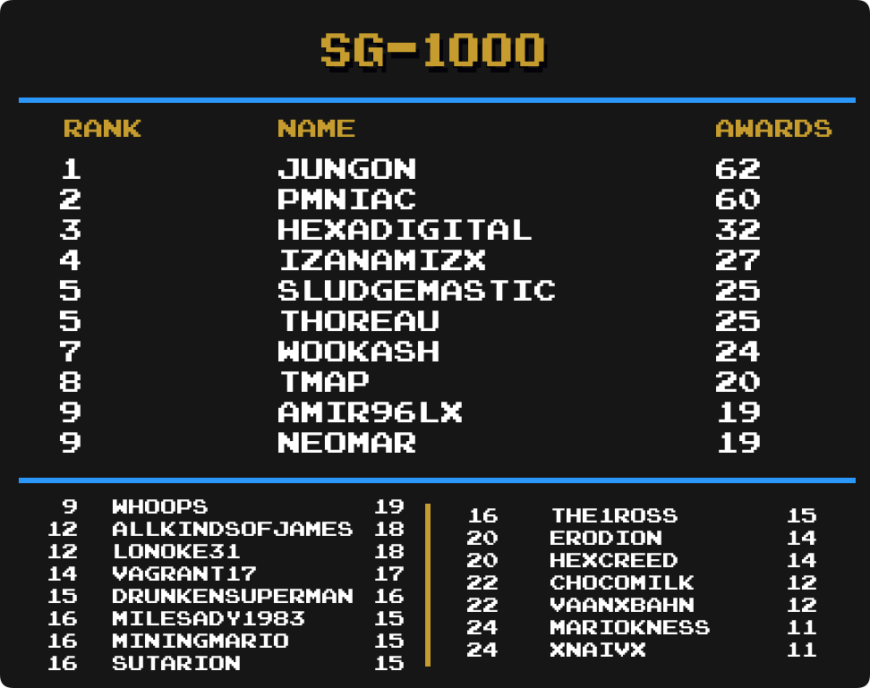
-
Jungon remains in 1st with 62 total mastery awards.
SNES
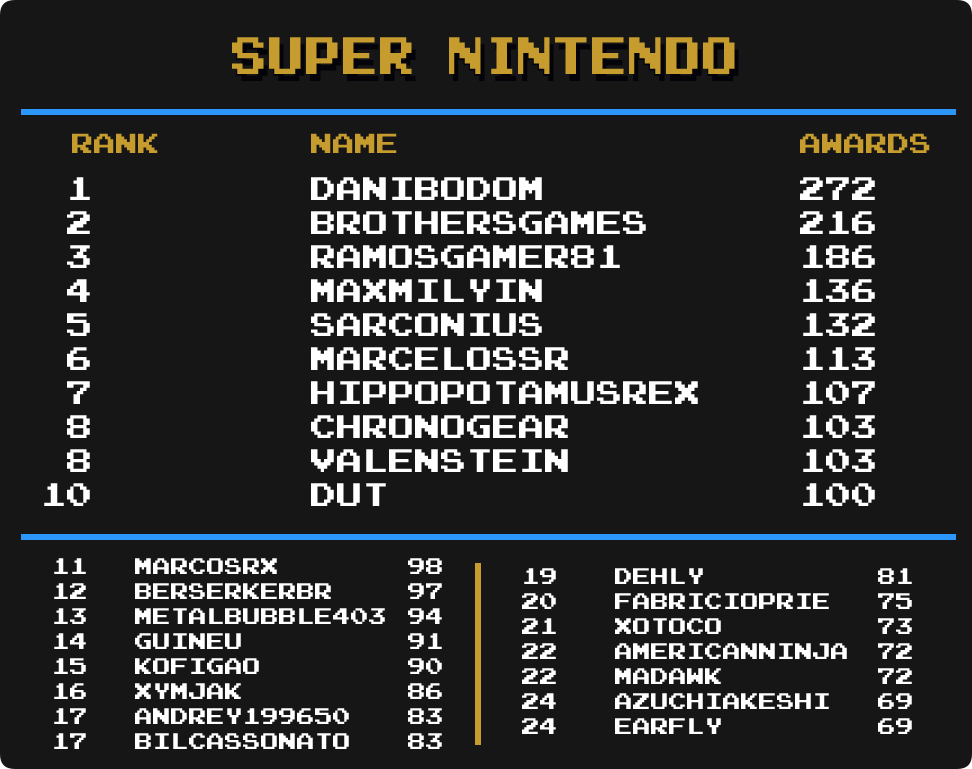
-
danibodom remains in 1st with 272 total mastery awards.
-
ChronoGear has moved up 1 spot and is tied for 8th place.
Uzebox
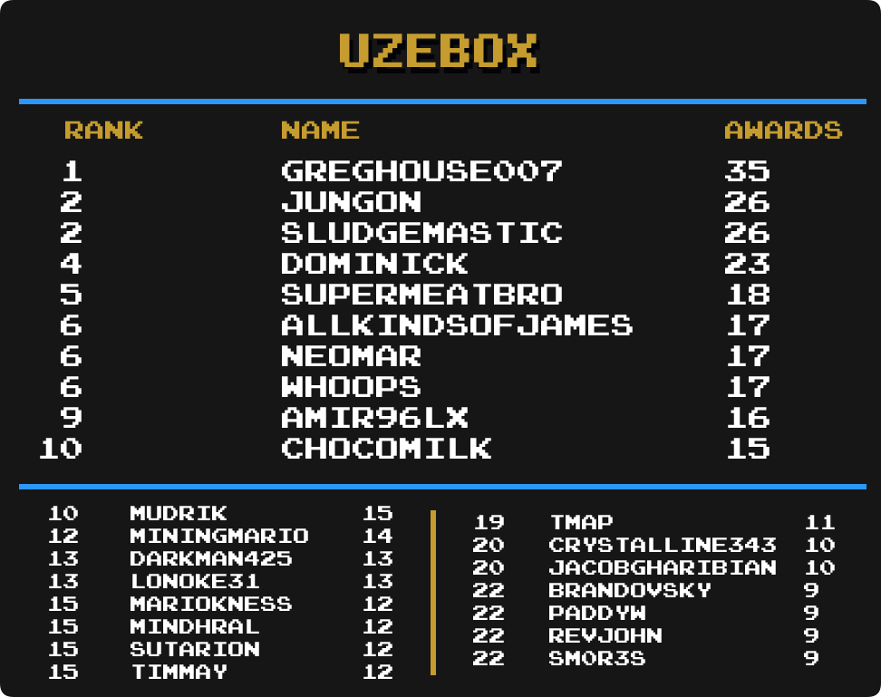
-
GregHouse007 remains in 1st with 35 total mastery awards.
-
AllKindsOfJames has moved up 5 spots and is in a 3-way tie for 6th place.
-
NEOMAR has moved up 1 spot and is in a 3-way tie for 6th place.
-
MiningMario has moved up 2 spots and is in 12th place.
-
Sutarion has moved up 3 spots and is in a 4-way tie for 15th place.
-
Jacobgharibian has moved up 1 spot and is tied for 20th place.
-
 RevJohn has made it into the top 25 and is in a 5-way tie for 22nd place.
RevJohn has made it into the top 25 and is in a 5-way tie for 22nd place.
Virtual Boy
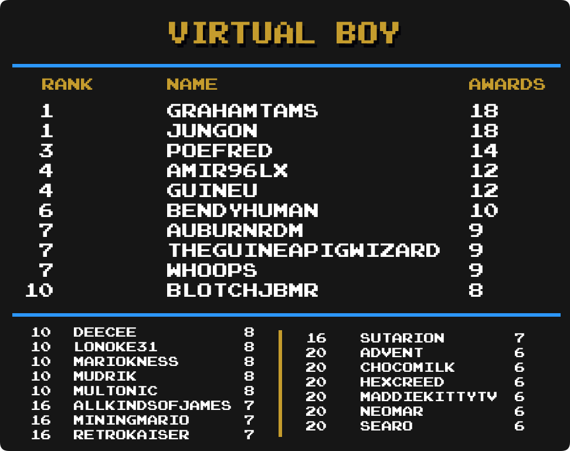
-
Grahamtams remains in 1st with 18 total mastery awards.
WASM-4
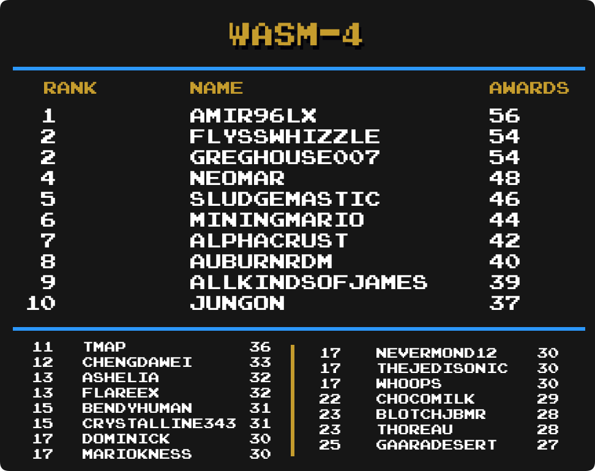
-
Amir96lx remains in 1st with 56 total mastery awards.
-
AllKindsOfJames has moved up 1 spot and is in 9th place.
-
 chengdawei has moved up 3 spots and is in 12th place.
chengdawei has moved up 3 spots and is in 12th place. -
ChocoMilk has moved up 1 spot and is in 22nd place.
Watara Supervision
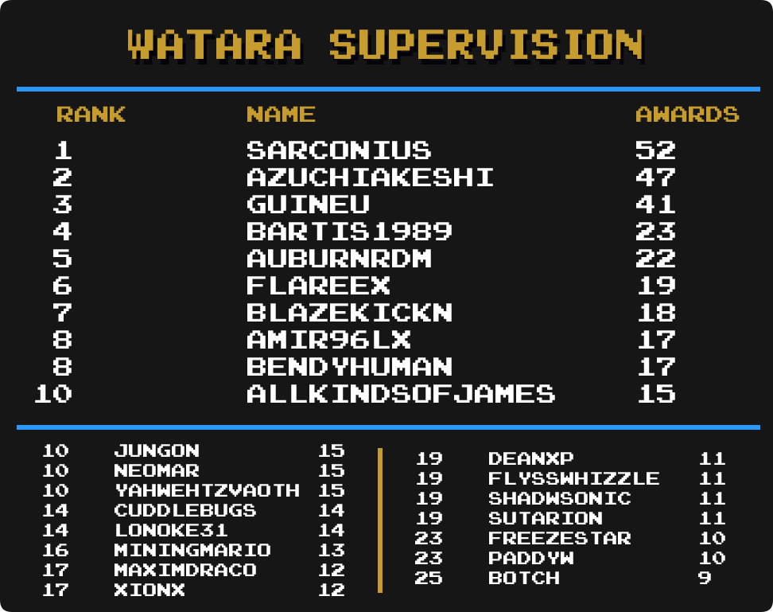
 Botch
Botch